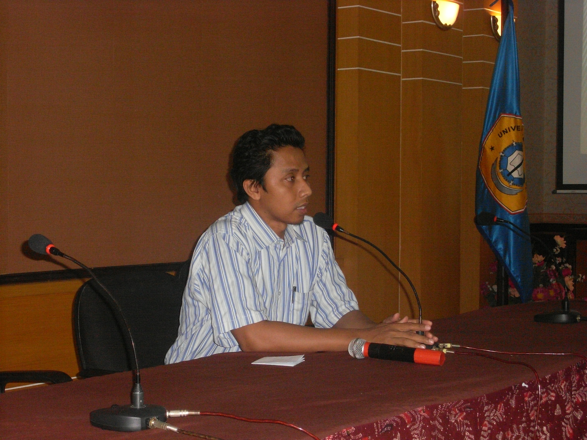
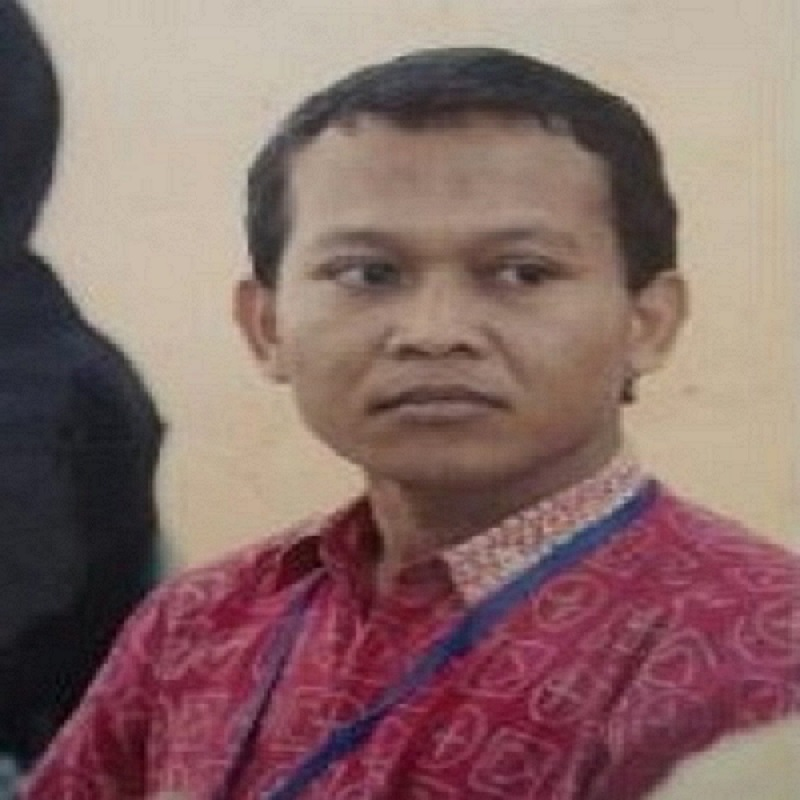

Welcome To
LABORATORIUM TEKNOLOGI INFORMASI DAN APLIKASI
Moch. Kautsar Sophan, S.Kom, M.T.
Kepala Laboratorium
Email: kautsar@trunojoyo.ac.id
Laboratorium Teknologi Informasi dan Aplikasi
Selamat Datang di halaman Laboratorium Teknologi Informasi dan Aplikasi.
Di Laboratorium ini ditawarkan bidang minat yang berfokus pada keahlian melakukan pengujian perangkat lunak, Kemampuan mengelola proyek perangkat lunak, Kemampuan mengurangi resiko kesalahan perangkat lunak, dan Kemampuan membuat perangkat lunak game
Mata kuliah bidang keahlian RPL, antara lain:- Penjaminan Mutu Perangkat Lunak,
- Arsitektur Perangkat Lunak,
- Evolusi Perangkat Lunak,
- Konstruksi Perangkat Lunak,
- Penyempurnaan Proses Perangkat Lunak,
- Ekonomi Rekayasa Perangkat Lunak,
- Topik Khusus RPL.
Fasilitas
Laboratorium Rekayasa Perangkat Lunak dilengkapi dengan komputer yang memiliki spesifikasi bervariasi mulai dari,
- Processor Intel Core i3 Gen-3, i5 Gen-8, sampai Intel® Xeon® E5-2640 dengan RAM 4GB-16GB.
- Untuk HDD sebagian besar minimal 1TB.
- Semua monitor berukuran 19″ untuk memudahkan mahasiswa dalam melakukan penelitian dan pembelajaran rekayasa perangkat lunak ataupun pemrograman.
- Dilengkapi LED TV 55″ untuk mahasiswa dalam melakukan demo pembelajaran.
Research
| No | Dosen | Scopus | Tahun |
|---|---|---|---|
| 1 | Moch. Kautsar Sophan, S.Kom, M.T. | PENGEMBANGAN DATABASE OBJEK WISATA PESISIR HALAL DENGAN FOTO 360 | 2022 |
| PENGEMBANGAN MARKETPLACE PRODUK UNGGULAN OBAT DAN REMPAH UNIVERSITAS TRUNOJOYO MADURA DENGAN ISO 29148 | 2021 | ||
| Pemanfaatan Atribut Item dalam Sistem Rekomendasi untuk mengatasi permasalahan sparsity dan cold-start pada Pendekatan Collaborative Filtering | 2020 | ||
| 2 | Firdaus Solihin, S.Kom., M.Kom. | IDENTIFIKASI PENYAKIT JAGUNG SECARA OTOMATIS MENGGUNAKAN KLASIFIKASI SUPPORT VECTOR MACHINE (SVM) DAN EKSTRAKSI FITUR GRAY LEVEL CO-OCCURENCE METRICS (GLCM) UNTUK MENDUKUNG PERBAIKAN KUALITAS JAGUNG MADURA | 2022 |
| 3 | Sigit Susanto Putro, S.Kom., M.Kom. | KLASTERISASI HASIL PERTANIAN JAGUNG MENGGUNAKAN K-MEANS SEBAGAI SALAH SATU PENINGKATAN KETAHANAN PANGAN DI PULAU MADURA | 2021 |
| PEMILIHAN LAHAN TANAMAN PADI DALAM RANGKA KETAHANAN PANGAN DI BANGKALAN-MADURA BERBASIS SISTEM PENDUKUNG KEPUTUSAN | 2020 | ||
| PERANCANGAN PURWARUPA HEAT EXCANGER TYPE SHELL AND TUBE MODEL COUNTER FLOW SEBAGAI MEDIA AJAR PENGENDALIAN TEMPERATUR MENGGUNAKAN NEURO-FUZZY CONTROL | 2018 | ||
| 4 | Dwi Kuswanto, S.Pd., M.T. | PURWARUPA PRODUKSI GARAM MENGGUNAKAN METODE HYBRID (MODEL DOUBLE SLOPE LENSA FRESNEL DAN PEMANAS CAHAYA ELEKTRIK) BERBASIS INTERNET OF THINGS | 2022 |
| PROTOTIPE SMART LABORATORIUM DENGAN KONSEP INTERNET OF THING (IOT) MENGGUNAKAN RASPBERRY PI | 2021 | ||
| Pengembangan Prosedur Pelaporan Insiden Keamanan Informasi Menggunakan Standarisasi ISO/IEC 27001 dan 27002 | 2016 |
Publikasi
| No | Dosen | Scopus | Tahun |
|---|---|---|---|
| 1 | Moch. Kautsar Sophan, S.Kom, M.T. | Geographic Information System (GIS) for Salt Management in Madura Island | 2021 |
| A User-based Normalization Multi-Criteria Rating Approach for Hotel Recommendation System | 2021 | ||
| Combination of feature engineering and feature learning approaches for classification on visual complexity images | 2021 | ||
| 2 | Firdaus Solihin, S.Kom., M.Kom. | Advancement of information extraction use in legal documents | 2021 |
| RESTful web service for madurese and indonesian language translator applications on android devices | 2020 | ||
| Finite State Automata Approach for Text to Speech Translation System in Indonesian-Madurese Language | 2020 | ||
| 3 | Sigit Susanto Putro, S.Kom., M.Kom. | COMPARISON OF BACKPROPAGATION AND ERNN METHODS IN PREDICTING CORN PRODUCTION | 2022 |
| User experience measurement on augmented reality mobile application for learning to read using a phonics-based approach | 2021 | ||
| The Arrangement of Convolutional Neural Network Layers for Digit Speech Recognition | 2021 | ||
| 4 | Dwi Kuswanto, S.Pd., M.T. | Application of Improved Random Forest Method and C4.5 Algorithm as Classifier to Ransomware Detection Based on the Frequency Appearance of API Calls | 2021 |
| Cryptograph Rsa and Compression Shannon Fano Text File Services at Mobile Devices | 2020 |
Buku Dosen
| No | Dosen | Scopus | Tahun |
|---|---|---|---|
| 1 | Moch. Kautsar Sophan, S.Kom, M.T. | Aplikasi pemetaan menggunakan QGis dan Python | 2021 |
| Aplikasi GUI klasifikasi citra menggunakan PYQT | 2021 | ||
| Pemanfaatan augmented reality dan animasi menggunakan : HP Reveal, Metaverse dan Animaker untuk media pembelajaran era 4.0 | 2019 | ||
| 2 | Sigit Susanto Putro, S.Kom., M.Kom. | Analisa dalam perancangan prototipe heat exchanger shell dan tube | 2018 |
| Dasar komputasi cerdas | 2017 | ||
| 3 | Dwi Kuswanto, S.Pd., M.T. | Dasar jaringan komputer Windows : teori & praktek | 2019 |
| Keamanan Jaringan | 2018 |
Faculty member

Firdaus Solihin, S.Kom., M.Kom.
Sigit Susanto Putro, S.Kom., M.Kom.
